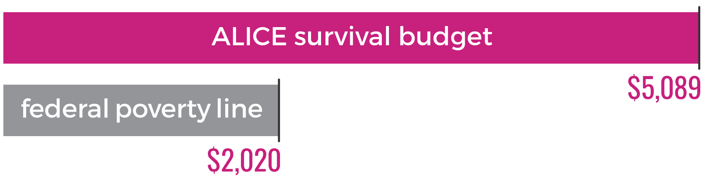

Students were asked a series of questions regarding their eating habits. Their results to the questions are below.
OVERVIEW
WHAT DOES IT MEAN TO BE FOOD INSECURE?
The U.S. Department of Agriculture defines food insecurity as the lack of “consistent, dependable access to enough food for active, healthy living.” In other words, it means going hungry, or being at risk of going hungry.
For some, food insecurity is a lifelong struggle, but for most the cause is a temporary financial setback. Every person has needs, which in our society include food, shelter, health care, transportation, and sometimes child care. When an unexpected and costly event happens and money suddenly becomes scarce, an individual may find they have to temporarily forgo one of these needs. Often, that one is food.
Food insecurity is an all too common problem for today’s college students. According to research by the Urban Institute, from 2011-2015 one in five students at two-year colleges lived in a food insecure household.
BY THE NUMBERS
20 million
undergraduates nationwide
40 percent
attend community college
food insecurity affects
as many as
1 IN 3
undergraduate students
Hardships
31%
had trouble paying rent
49%
borrowed money from friends
14%
experienced homelessness
student&food
39%
“The food that I bought just didn’t last and I didn’t have enough money to get more.”
“The food that I bought just didn’t last and I didn’t have enough money to get more.”
47%
“I couldn’t afford to eat balanced meals.”
“I couldn’t afford to eat balanced meals.”
38%
“I have cut the size of my meals or skipped meals.”
“I have cut the size of my meals or skipped meals.”
30%
“I have been hungry but didn’t eat because there wasn’t enough money for food.””
“I have been hungry but didn’t eat because there wasn’t enough money for food.””
Hunger & Education
31%
of households must choose between paying for education and food
59%
of food insecure households do not possess a post-secondary education
56%
of rst-generation undergraduate students are food insecure
MONTHLY BUDGET
ALICE SURVIVAL BUDGET
ALICE
Created by the United Way, ALICE stands for-Asset Limited, Income Constrained, Employed. ALICE represents those in our communities who are working yet still struggling to make ends meet.
The ALICE Household Survival budget takes into consideration the bare minimum costs of basic necessities needed in Virginia. This budget does not allow for any savings and provides for a very modest living.
FEDERAL POVERTY LINE
Annually set to reflect the minimum income needed for food, clothing, transportation, shelter and other necessities. Federal poverty levels are used to determine the eligibility of an individual or family for certain federal assistance programs.
Virginia Single Adult
Housing: $689
Health Care: $170
Food: $169
Miscellaneous: $169
Transportation: $316
Taxes: $343
Virginia Single Adult
Housing: $689
Health Care: $170
Food: $169
Miscellaneous: $169
Transportation: $316
Taxes: $343
Child Care: $1204
